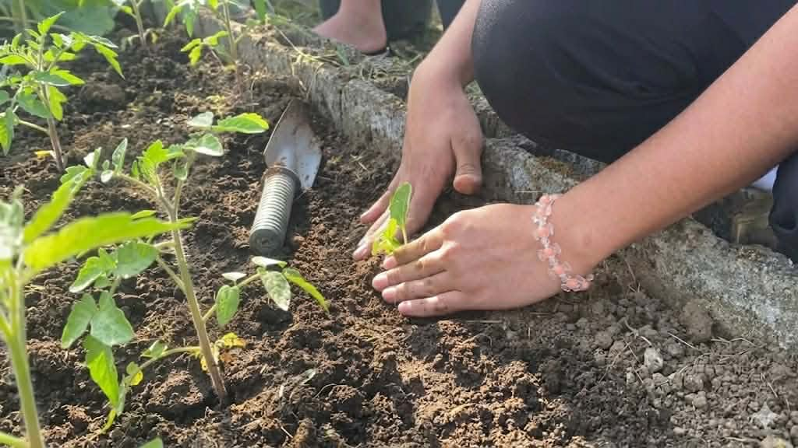
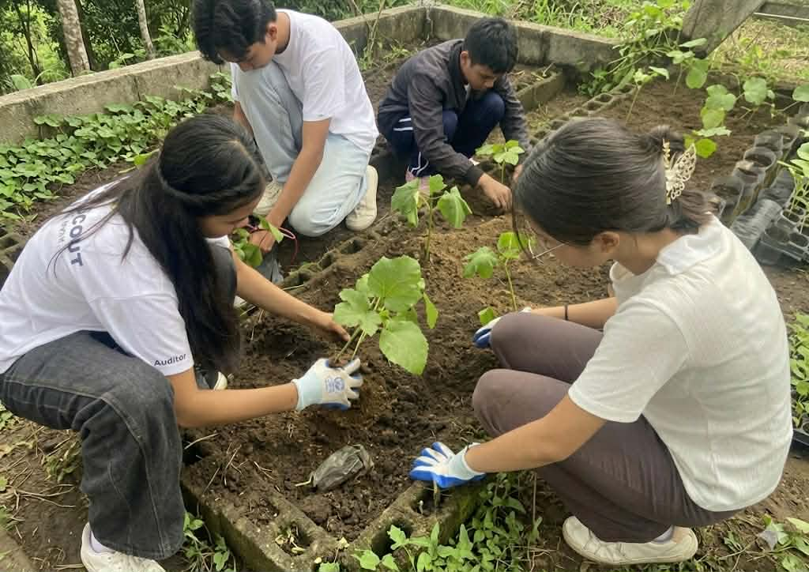
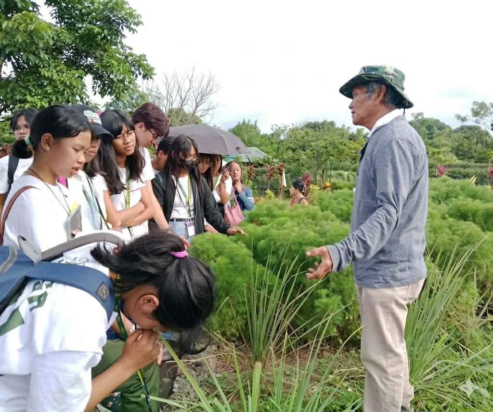
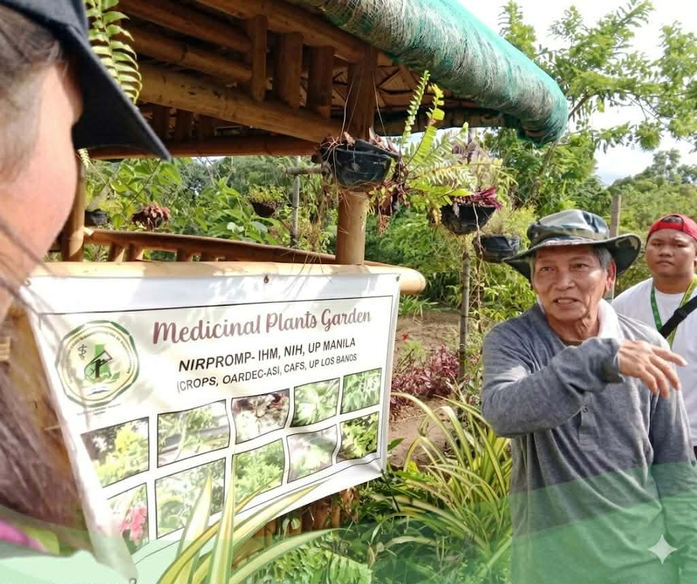
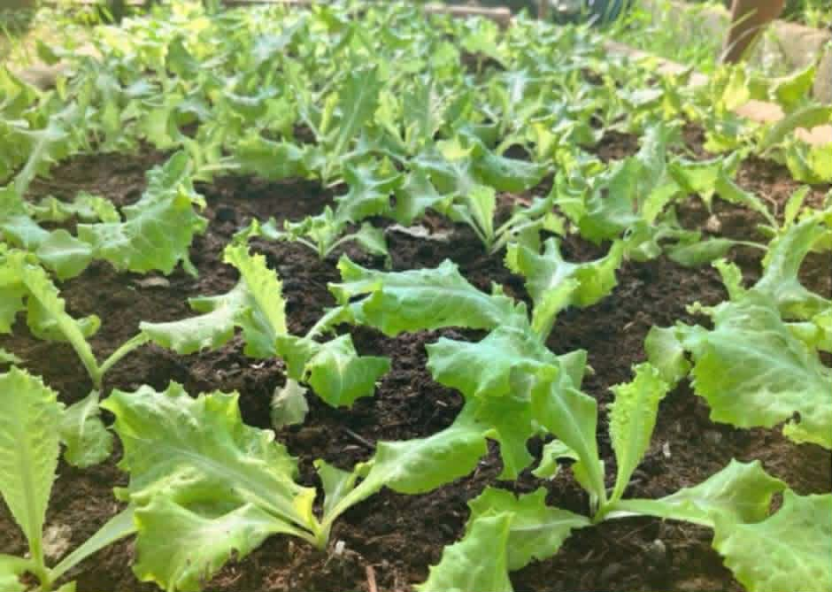
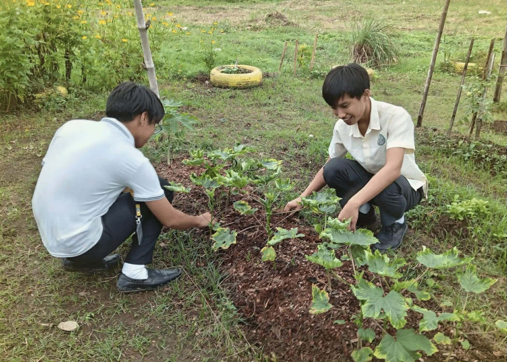
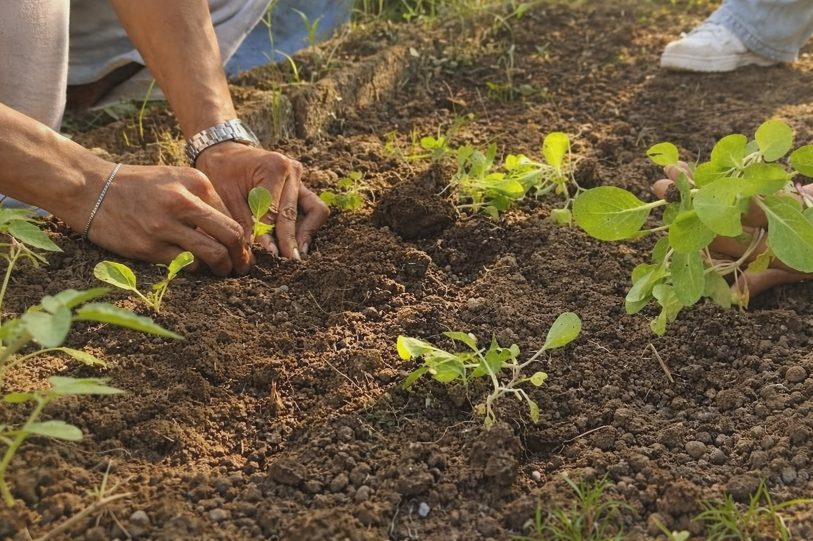
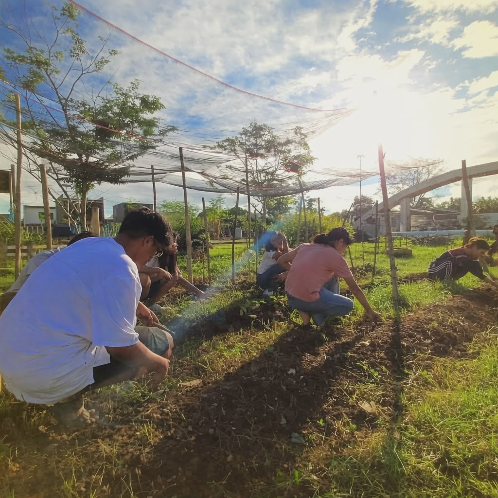

The Role of the Youth
The youth play a critical role in shaping the future of agriculture. Through innovation, education, and entrepreneurship, young Filipinos can modernize agriculture and ensure long-term food security. SIBOL believes that when young people understand where food comes from and the effort behind it, they become more conscious, responsible, and empowered citizens.
Youth in Action: LBSHS Organic Agriculture Society
At Los Baños Senior High School, students actively participate in agricultural activities through the Organic Agriculture Society. Members are involved in various hands-on experiences such as crop planting, farm maintenance, sustainability practices, and community feeding programs.
These initiatives demonstrate that the youth are not only the future of agriculture — they are already shaping it today. Through participation, learning, and community engagement, young people help strengthen food security and promote sustainable agricultural practices in the Philippines.








Images from:
LBSHS - Organic Agriculture SocietyWatch the SIBOL Advocacy
The future of agriculture depends not only on farmers, but also on the awareness and participation of the youth. This short advocacy video highlights the importance of agriculture, food security, and the role young Filipinos can play in shaping a more sustainable future.
Through initiatives like SIBOL and the participation of students in agricultural activities, we can inspire more people to value farming, support local food systems, and recognize the importance of those who help feed the nation.
Sustainable Agriculture
Sustainable agriculture focuses on farming practices that protect the environment, support farmers, and provide healthy food for communities.
Using natural and eco-friendly farming methods
Farming in harmony with nature ensures a healthy environment for everyone.
Conserving soil and water resources
Efficient management protects resources for current and future generations.
Supporting local food production
Buying local strengthens farmers and the community economy.
Reducing food waste
Minimizing waste ensures food reaches more people and protects the planet.
Encouraging farm innovations
New ideas and technology improve productivity and sustainability.
Every Filipino Can Help
Small actions, when done together, can create meaningful change. The future of food starts with you.
Supporting locally grown products
Choose local products to empower farmers and strengthen communities.
Learning about agriculture
Understand food systems and how agriculture impacts daily life.
Reducing food waste
Minimize waste to conserve resources and ensure food reaches more people.
Sharing knowledge and awareness
Spread the word to inspire others and grow the movement.
Respecting and appreciating farmers
Recognize the hard work and dedication of those who feed the nation.
Grow the Future with SIBOL
Agriculture is the foundation of life. Every seed planted today helps secure the food of tomorrow. Through awareness, participation, and community action, we can empower the next generation to care about agriculture and food security.
SIBOL is a reminder that the future of food is not only in the hands of farmers, but in the hands of every Filipino who chooses to care, support, and take action.
"When the youth plant the seeds of change, the nation harvests a better future."
Together, we can help SIBOL grow.